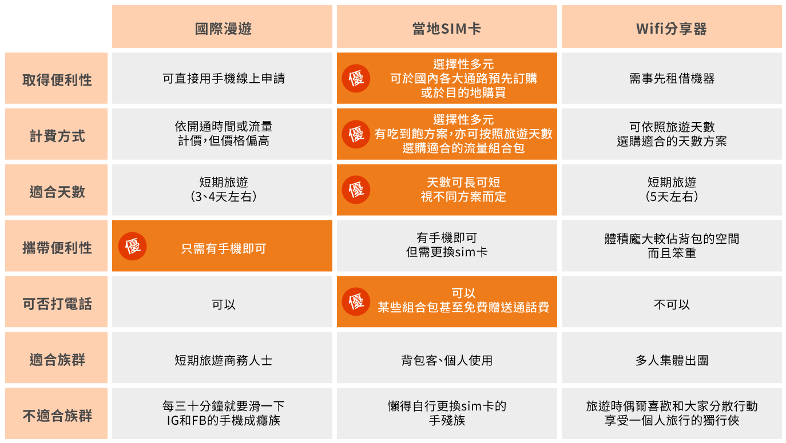

你常出國嗎？根據2018年台灣交通部觀光的統計報告顯示，國人平均一年出國0.7次，每次花費近5萬左右，換句話說，一般人每兩年才能好不容易出國一次，辛辛苦苦才換來難得海外假期，當然會希望除了旅途平安之外，更能在有限的旅遊預算內玩得盡興。
如果你問喜歡海外旅行的人，出國旅遊絕對不能沒有的東西是什麼?相信答案除了護照和錢之外，很多人都會回答一定要有網路才行！除了在抵達當地後能馬上與親友聯繫報平安之外，到了人生地不熟的地方也能憑藉著導航系統順利找到目的地，更不用提能無時無刻將旅途中的美照曬到IG和Facebook上，和朋友們即時視訊分享旅行中的喜悅等等。
然而，市面上的海外上網方法這麼多，究竟該如何精打細算才能守住荷包又選到最適合自己的上網方案呢？娜娜這編這邊就來跟大家分享一下出國網路使用的眉角吧！
目前出國最常見的上網方式有三種：國際漫遊、海外SIM卡、Wifi分享器

國際漫遊
如果是以短期的商務旅遊為出國目的的小夥伴們，選用國際漫遊的方案是一項不錯的選擇，除了申請的方式非常便利，無需額外購買sim卡或是租借wifi分享器，省掉了許多手續和時間之外，對於出國但大部分時間都以來回穿梭在機場 - 辦公室 – 旅館為主的商務人士而言，有些以流量計價的國際漫遊方案對於只會用到極少流量的人來說是比較划算的方案！
國際漫遊最大的優點就在於便利性，通常在國外旅遊時，飛機一落地便會收到自家電信業者推薦的國際漫遊方案簡訊，方便你選擇最適合自己旅遊天數的流量組合包，然而其缺點便在於它的收費往往偏高，因此在選用國際漫遊以前，務必仔細看清楚該方案的收費方式是否適合自己使用網路的習慣，除此之外，也千萬別忘記要時時追蹤自己目前已使用的國際漫遊流量數據，避免超出自己的預算太多，要不然有可能回國後會收到數字讓你心一跳，荷包開始煎熬的帳單喔！
海外SIM卡
海外SIM卡是很多愛旅遊的人出國時的首選，原因無非是它的取得方式既有彈性又非常便利，如果你有出國焦慮症，一定要事先把事情全部安排好才敢出國，那你或許會想先在國內買好海外sim卡，以防到了當地臨時發生無法處理的意外，況且在國內的各大通路事先購買sim卡不但價格較便宜甚至還會得到許多免費贈品，也能事先將這項花費排除在出國的旅遊資金以外，避免到了當地要用僅有的旅費購買sim卡，壓縮到其他預算，現在更有許多的業者與海外的通路做配合，讓旅客可以到當地的機場指定窗口直接領取預定好的 sim 卡，避免愛忘東忘西的金魚腦一族把事先購買好的sim卡忘在家裡。
除了價格優惠而且取得途徑便利，大部分的sim卡都會有搭配的天數方案，以國人最愛旅遊的首選國家日本和韓國舉例，有許多的業者更是強力推出了許多搭配不同天數
網路吃到飽不降速
的優惠方案，對於平常一小時不刷手機就會痛苦難耐、心癢手癢、口吐白沫的小夥伴們，這種吃到飽、飽到讓你撐死的方案絕對可以幫你省錢到不要不要的!再來，以台灣人第二愛旅遊的中港澳地區來說很多台灣人往往會因為到了當地既不能滑FB也不能用Line聯絡親朋好友而傷透腦筋，想用翻牆軟體卻又因為安裝起來過於繁瑣而罷休，現在已有業者推出
一卡免翻牆的方案
，讓你即便到了中港澳旅遊，網路依然暢行無阻，最後，如果近期打算要去歐美國家的小夥伴們，有些sim卡除了讓你網路吃到飽之外，還加碼
額外贈送通話費
，價格就是要甜到讓你蛀牙，因此選擇海外sim卡絕對能解決你隨時隨地就想曬旅遊美照的癮頭。
使用sim卡唯一的缺點就在於需要好好保管原先在國內的sim卡，而且對於泡個泡麵都會失敗的手殘族而言，要自行更換sim卡簡直就是天方夜譚，不過隨著國外旅遊的經驗日積月累，網路上也有許多
教你怎麼更換sim卡的教學影片
和文章，相信這些困難都是可以一一克服的！
Wifi分享器
對於喜愛跟三五好友一同出國的你來說，wifi分享器在價格便宜上絕對是穩穩勝出的，wifi分享器不但能同時多人一起分享網路，而且其取得便利性也非常高，通常機場都設有櫃檯提供事先或現場租借wifi分享器的服務。
然而它的缺點在於其便攜性相對於國際漫遊或sim卡來說相對較低，wifi分享器因為體積比較大所以很佔隨身包的空間，對於出國需要東跑西走的小夥伴們來說，隨身包的重量往往與一天內能走多少路成反比，如果隨身行李過重往往也會降低旅遊的樂趣和機動性，如果沒有事先講好要用怎樣的方式輪流背wifi分享器，也很有可能會和朋友們在國外撕破臉最後不歡而散喔。
另外，由於wifi分享器的接收範圍有限，所以會有大家一定要集體行動的限制，如果一不小心和夥伴們走散了可能就會帶來不小的困擾，特別是對到了日韓就會失心瘋購物的台灣人，如果在和朋友們分散開來購物前沒有事先講好等一下要回來集合的地點和時間，就會很容易發生聯繫不上人的慘況，還有對於在旅遊時偶爾喜歡有自己單獨旅遊時間的獨行俠來說，也需要再三考慮這個方案是否真的適合自己的旅遊習慣，避免掃了自己還有大家的旅遊興致。
出國既然有了網路，那就盡情地放膽玩吧！
即便是要跟外國人溝通也不用擔心，只要拿出手機，輕輕鬆鬆用線上翻譯或搜尋圖片給對方看，都是解決語言不通的好辦法; 原本在國內預訂好的房間到了當地臨時被取消了怎麼辦？
沒問題！有了網路妳照樣能處變不驚的馬上在網路上預訂其他旅店，根本不用害怕會突然露宿街頭。
沒錯！有了網路就是那麼安心！下一次假期，你想去哪個國家瘋狂一下呢？